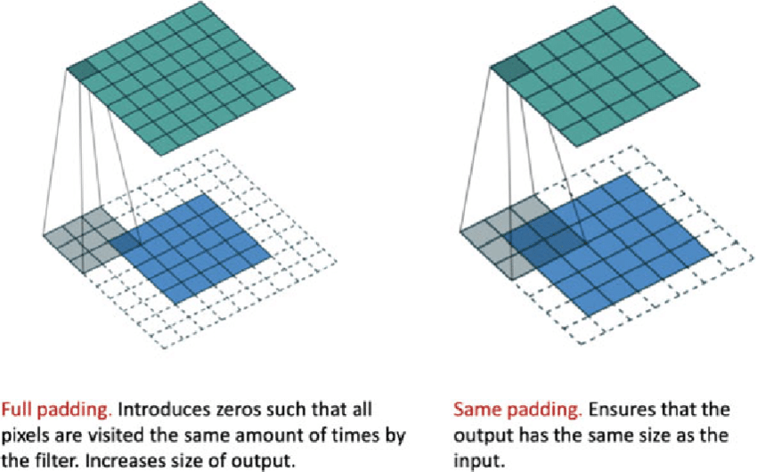
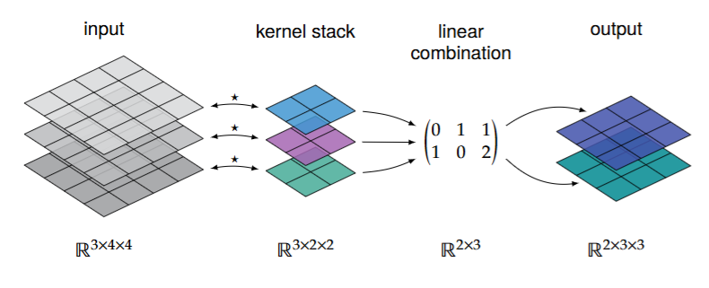
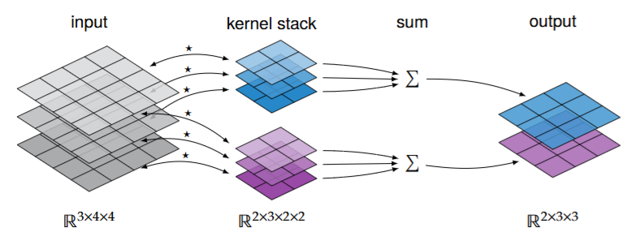
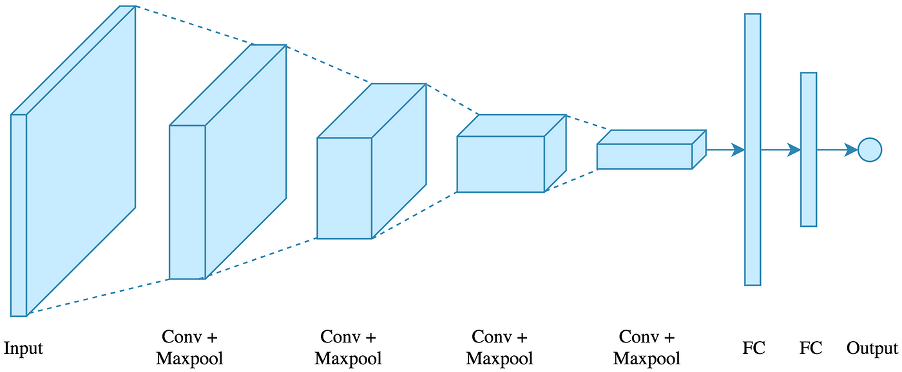
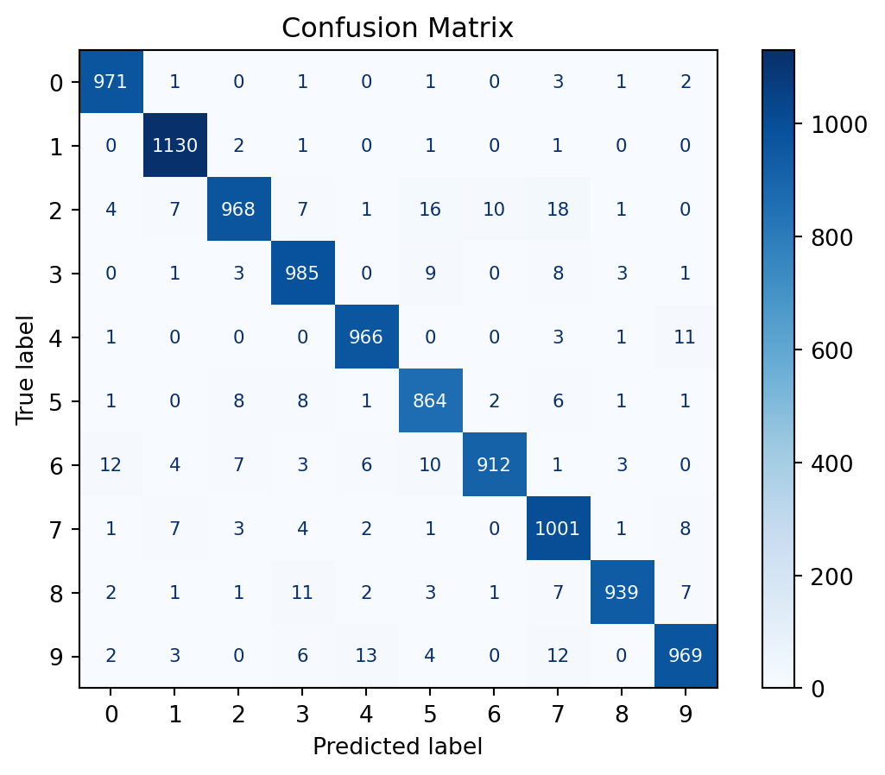

As we discussed previously, Multi-layer Perceptrons (MLP) are not very good at image classification. This is because they do not take into account the spatial relationships between pixels. In this chapter, we will discuss Convolutional Neural Networks (CNNs), which are specifically designed to handle image data.
Convolution
Before we discuss CNNs, we need to understand the concept of convolution. Convolution is a mathematical operation that is used takes in an input vector, \(f\), and a kernel vector, \(k\), and performs a sliding window weighted sum of \(f\), with \(k\) acting as weights. Each weighted sum can be represented by a dot product. The convolution operation is defined as follows: \[
(k * f)[i] = \sum_{j=0}^{m-1} k[j] f[i+j]
\]
for \(i \in \{0, \ldots, n-m\}\).
Where \(k\), the kernel, is an \(m\)-vector and \(f\), the input is and \(n\)-vector. The result of the convolution is a vector of length \(n-m+1\). Note that we’re using brackets notation (\([]\)) instead of subindeces, as we go deeper this notation is clearer as we introduce more indices.
This concept can be expanded into a 2D case using the following formula:
for \(i_1 \in \{0, \ldots, h-m\}\) and \(i_2 \in \{0, \ldots, w-m\}\).
Where \(k\), the kernel, is an \(m\times m\) matrix and \(f\), the input is an \(h\times w\) matrix representing an image. The result of the convolution is a \((h-m+1) \times (w-m+1)\) matrix.
The 2d Convolution is also a sort of sliding window weighted sum operation as depicted by the following figure:
Padding
The previous image shows that a convolution operation reduces the size of the input image. This is not always desirable, especially when the image is small. To avoid this, we can pad the input image with zeros. There are three main padding types: none or valid, same, and full. The first one represents no padding, the second one represents padding such that the output has the same size as the input and the last one represents padding such that the output uses all the possible information. These are not the only types of padding, we can also give an arbitrarily sized padding. The following figure shows the effect of padding on a 2D convolution:

Max Pooling
Max pooling is a downsampling operation that reduces the size of the input tensor. It is a sliding window operation that takes the maximum value of the window. In the context of CNN’s it acts as an activation function. There are two main parameters for max pooling: the window size and the stride. The window size is the size of the sliding window and the stride is the number of steps the window takes in each direction. The following figure shows the effect of max pooling on a 2D tensor:
Convolutional Layers and Networks
An image isn’t just a 2D matrix/tensor, specially if it has multiple color channels (e.g. RGB). As such, we need a 3-tensor to represent an image with several channels. It is tempting to define the shape of the 3-tensor as \(h \times w \times c\) where \(c\) is the number of color channels, however, for reasons that will become aparent soon, it’s better to define it as a \(c \times h \times w\) 3-tensor. This way we can interpret our tensor as a stack of \(c\) 2D matrices, each of shape \(h \times w\) representing one of the channels.
Each of these channels represents a different feature of the image. As such a convolutional layer will take in \(c_\text{in}\) channels and output \(c_\text{out}\) channels. Thus, the output will have shape \(c_\text{out} \times h \times w\). There are two main ways to implement a convolutional layer
Single-channel convolution: Each input channel is convolved with a different filter, then a linear transformation to these convolutions produces the output channels.

Multi-channel convolution: Each input and output channel have their own filter, then all the convolutions corresponding to each output channel are summed together to produce the output channels.

In the end our goal is to learn the components of the kernels. Mathematically, one can be obtained from the other, so single-channel convolution is often used in practice as it has less free parameters.
Finally, it is good practice to use convolution layers followed by MaxPool layers to reduce the spatial dimensions of the output. Then, flatten the output and feed it into a (series of) fully connected layer. The follwing picture shows a schematic for a CNN:

PyTorch
Previously, we showed that a MLP struggled to classify MNIST digits. Let’s see if a CNN can do better. To avoid walls of code, most of it has been folded by default. You can unfold it by clicking the arrow in the top right corner of the code block.
Libraries and data
import torchimport torch.nn as nnimport torch.nn.functional as Fimport torchvisionimport torchvision.transforms as transformsimport osfrom tqdm import trangedevice = torch.device("cuda"if torch.cuda.is_available() else"cpu")# Load and normalize the training and test setstransform = transforms.Compose([ transforms.RandomHorizontalFlip(p=0.5), transforms.RandomRotation(10), transforms.ToTensor(), transforms.Normalize((0.5,), (0.5,)),])# Load the MNIST datasettrainset = torchvision.datasets.MNIST( root='./data', train=True, # training set download=True, transform=transform)testset = torchvision.datasets.MNIST( root='./data', train=False, # testing set download=True, transform=transform)
# hyperparametersbatch_size =64num_epochs =5learning_rate =0.001# Create the modelmodel = ConvolutionalMNISTClassifier().to(device)# Define the loss function and the optimizercriterion = nn.CrossEntropyLoss()optimizer = torch.optim.Adam(model.parameters(), lr=learning_rate)# Train the modeltrainloader = torch.utils.data.DataLoader(trainset, batch_size=batch_size, shuffle=True)if os.path.exists("models/cnn_mnist_classifier.pth"): state_dict = torch.load("models/cnn_mnist_classifier.pth", weights_only=False) model.load_state_dict(state_dict)else:# Train the model model.train()for epoch in trange(num_epochs):for images, labels in trainloader: images = images.to(device) labels = labels.to(device)# Forward pass outputs = model(images) loss = criterion(outputs, labels)# Backward and optimize optimizer.zero_grad() loss.backward() optimizer.step()# save model torch.save(model.state_dict(), "models/cnn_mnist_classifier.pth")
Testing the model
import matplotlib.pyplot as pltfrom sklearn.metrics import accuracy_score, confusion_matrix, ConfusionMatrixDisplay# retrieve data in sklearn formatX_test = torch.stack(list(zip(*testset))[0]) # exhaust the iterator, unzip, get xs, stacky_test = testset.targets# set model to evaluation modemodel.to("cpu")model.eval()# testwith torch.no_grad():# argmax returns the index with the highest probability, the predicted class y_pred = model(X_test).argmax(dim=1)# compute confusion matrixcm = confusion_matrix(y_test, y_pred)disp = ConfusionMatrixDisplay(confusion_matrix=cm)disp.plot(cmap=plt.cm.Blues, text_kw={'fontsize': 8, 'ha': 'center', 'va': 'center'})# Format numbers as integers without scientific notationfor text in disp.text_.ravel(): text.set_text(f'{int(float(text.get_text()))}')plt.title('Confusion Matrix')plt.show()# compute accuracyaccuracy = accuracy_score(y_test, y_pred)print(f"Accuracy: {accuracy}")

Accuracy: 0.9705
As we can observe, we get an almost perfect test accuracy of 97% with a model using just under 10k parameters. Meanwhile the MLP classifier achieved 16% test accuracy with almost 40k parameters. This shows that Convolutional Neural Networks are much more powerful than Multi-Layer Perceptrons for image classification tasks.